Chapter 5 Quality Control
5.1 Introduction
We will use two sets of Bone Marrow Mononuclear Cells (BMMC):
- ‘CaronBourque2020’: pediatric samples
- ‘Hca’: HCA Census of Immune Cells for adult BMMCs
Fastq files were retrieved from publicly available archive (SRA and HCA).
Sequencing quality was assessed and visualised using fastQC and MultiQC.
Reads were aligned against GRCh38 and features counted using cellranger (v3.1.0).
We will now check the quality of the data further:
- mapping quality and amplification rate
- cell counts
- distribution of keys quality metrics
We will then:
- filter genes with very low expression
- identify low-quality cells
- filter and/or mark low quality cells
5.2 Load packages
- SingleCellExperiment - to store the data
- Matrix - to deal with sparse and/or large matrices
- DropletUtils - utilities for the analysis of droplet-based, inc. cell counting
- scater - QC
- scran - normalisation
- igraph - graphs
- biomaRt - for gene annotation
- ggplot2 - for plotting
- irlba - for faster PCA
projDir <- params$projDir
wrkDir <- sprintf("%s/CaronBourque2020/grch38300", projDir)
outDirBit <- params$outDirBit # "AnaWiSeurat/Attempt1"
qcPlotDirBit <- "Plots/Qc"
poolBool <- TRUE # FALSE # whether to read each sample in and pool them and write object to file, or just load that file.
biomartBool <- FALSE # TRUE # biomaRt sometimes fails, do it once, write to file and use that copy. See geneAnnot.Rmd
addQcBool <- TRUE
runAll <- TRUE
saveRds <- TRUE # overwrite existing Rds files
dir.create(sprintf("%s/%s/%s", projDir, outDirBit, qcPlotDirBit),
showWarnings = FALSE,
recursive = TRUE)## [1] "/ssd/personal/baller01/20200511_FernandesM_ME_crukBiSs2020/AnaWiSce/Ana1/Plots/Qc"5.3 Sample sheet
We will load both the Caron and Hca data sets.
# CaronBourque2020
cb_sampleSheetFn <- file.path(projDir, "Data/CaronBourque2020/SraRunTable.txt")
# Human Cell Atlas
hca_sampleSheetFn <- file.path(projDir, "Data/Hca/accList_Hca.txt")
# read sample sheet in:
splShtColToKeep <- c("Run", "Sample.Name", "source_name")
cb_sampleSheet <- read.table(cb_sampleSheetFn, header=T, sep=",")
hca_sampleSheet <- read.table(hca_sampleSheetFn, header=F, sep=",")
colnames(hca_sampleSheet) <- "Sample.Name"
hca_sampleSheet$Run <- hca_sampleSheet$Sample.Name
hca_sampleSheet$source_name <- "ABMMC" # adult BMMC
sampleSheet <- rbind(cb_sampleSheet[,splShtColToKeep], hca_sampleSheet[,splShtColToKeep])
sampleSheet %>%
as.data.frame() %>%
datatable(rownames = FALSE)5.4 Data representation
We will use a SingleCellExperiment object that is described here and stores various data types:
- the count matrix
- feature (gene) annotation
- droplet annotation
- outcome of downstream analysis such as dimensionality reduction
## [1] "/ssd/personal/baller01/20200511_FernandesM_ME_crukBiSs2020/AnaWiSce/Ana1/ScriptsMkWiC"## [1] "../Images/tenxLibStructureV3.png"## [1] TRUE
5.5 Example
We will load the data for the first sample in the sample sheet: SRR9264343.
i <- 1
sample.path <- sprintf("%s/%s/%s/outs/raw_feature_bc_matrix/",
wrkDir,
sampleSheet[i,"Run"],
sampleSheet[i,"Run"])
sce.raw <- read10xCounts(sample.path, col.names=TRUE)
sce.raw## class: SingleCellExperiment
## dim: 33538 737280
## metadata(1): Samples
## assays(1): counts
## rownames(33538): ENSG00000243485 ENSG00000237613 ... ENSG00000277475
## ENSG00000268674
## rowData names(3): ID Symbol Type
## colnames(737280): AAACCTGAGAAACCAT-1 AAACCTGAGAAACCGC-1 ...
## TTTGTCATCTTTAGTC-1 TTTGTCATCTTTCCTC-1
## colData names(2): Sample Barcode
## reducedDimNames(0):
## altExpNames(0):We can access these different types of data with various functions.
Number of genes and droplets in the count matrix:
## [1] 33538 737280Features, with rowData():
## DataFrame with 6 rows and 3 columns
## ID Symbol Type
## <character> <character> <character>
## ENSG00000243485 ENSG00000243485 MIR1302-2HG Gene Expression
## ENSG00000237613 ENSG00000237613 FAM138A Gene Expression
## ENSG00000186092 ENSG00000186092 OR4F5 Gene Expression
## ENSG00000238009 ENSG00000238009 AL627309.1 Gene Expression
## ENSG00000239945 ENSG00000239945 AL627309.3 Gene Expression
## ENSG00000239906 ENSG00000239906 AL627309.2 Gene ExpressionSamples, with colData():
## DataFrame with 6 rows and 2 columns
## Sample Barcode
## <character> <character>
## AAACCTGAGAAACCAT-1 /ssd/personal/baller.. AAACCTGAGAAACCAT-1
## AAACCTGAGAAACCGC-1 /ssd/personal/baller.. AAACCTGAGAAACCGC-1
## AAACCTGAGAAACCTA-1 /ssd/personal/baller.. AAACCTGAGAAACCTA-1
## AAACCTGAGAAACGAG-1 /ssd/personal/baller.. AAACCTGAGAAACGAG-1
## AAACCTGAGAAACGCC-1 /ssd/personal/baller.. AAACCTGAGAAACGCC-1
## AAACCTGAGAAAGTGG-1 /ssd/personal/baller.. AAACCTGAGAAAGTGG-1Single-cell RNA-seq data compared to bulk RNA-seq is sparse, especially with droplet-based methods such as 10X, mostly because:
- a given cell does not express each gene
- the library preparation does not capture all transcript the cell does express
- the sequencing depth per cell is far lower
Counts, with counts(). Given the large number of droplets in a sample, count matrices can be large. They are however very sparse and can be stored in a ‘sparse matrix’ that only stores non-zero values, for example a ‘dgCMatrix’ object (‘DelayedArray’ class).
## 10 x 10 sparse Matrix of class "dgCMatrix"
##
## ENSG00000243485 . . . . . . . . . .
## ENSG00000237613 . . . . . . . . . .
## ENSG00000186092 . . . . . . . . . .
## ENSG00000238009 . . . . . . . . . .
## ENSG00000239945 . . . . . . . . . .
## ENSG00000239906 . . . . . . . . . .
## ENSG00000241599 . . . . . . . . . .
## ENSG00000236601 . . . . . . . . . .
## ENSG00000284733 . . . . . . . . . .
## ENSG00000235146 . . . . . . . . . .5.6 Mapping QC
5.6.1 Gene body coverage
The plot below show the average coverage (y-axis) along the body of genes (x-axis).
tmpFn <- sprintf("%s/Images/1_AAACCTGAGACTTTCG-1.rseqcGeneBodyCovCheck.txt.geneBodyCoverage.curves.png", "..")
knitr::include_graphics(tmpFn, auto_pdf = TRUE)
5.6.2 Amplification rate
We will use the information stored in the ‘molecule info’ file to count the number of UMI and reads for each gene in each cell.
##mol.info.file <- sprintf("%s/%s/%s/outs/molecule_info.h5", wrkDir, sampleSheet[i,"Run"], sampleSheet[i,"Run"])
##mol.info <- read10xMolInfo(mol.info.file)
# or mol.info object if issue with H5Fopen
i <- 1
mol.info.file <- sprintf("%s/%s/%s/outs/molecule_info_h5.Rds", wrkDir, sampleSheet[i,"Run"], sampleSheet[i,"Run"])
mol.info <- readRDS(mol.info.file)## DataFrame with 18544666 rows and 5 columns
## cell umi gem_group gene reads
## <character> <integer> <integer> <integer> <integer>
## 1 AAACCTGAGAAACCTA 467082 1 3287 1
## 2 AAACCTGAGAAACCTA 205888 1 3446 1
## 3 AAACCTGAGAAACCTA 866252 1 3896 3
## 4 AAACCTGAGAAACCTA 796027 1 3969 1
## 5 AAACCTGAGAAACCTA 542561 1 5008 1
## ... ... ... ... ... ...
## 18544662 TTTGTCATCTTTAGTC 927060 1 23634 1
## 18544663 TTTGTCATCTTTAGTC 975865 1 27143 1
## 18544664 TTTGTCATCTTTAGTC 364964 1 27467 4
## 18544665 TTTGTCATCTTTAGTC 152570 1 30125 7
## 18544666 TTTGTCATCTTTAGTC 383230 1 30283 5## [1] "ENSG00000243485" "ENSG00000237613" "ENSG00000186092" "ENSG00000238009"
## [5] "ENSG00000239945" "ENSG00000239906"# for each cell and gene, count UMIs
# slow, but needs running, at least once
# so write it to file to load later if need be.
tmpFn <- sprintf("%s/%s/Robjects/sce_preProc_ampDf1.Rds", projDir, outDirBit)
if(!file.exists(tmpFn))
{
ampDf <- mol.info$data %>%
data.frame() %>%
mutate(umi = as.character(umi)) %>%
group_by(cell, gene) %>%
summarise(nUmis = n(),
totReads=sum(reads)) %>%
data.frame()
# Write object to file
saveRDS(ampDf, tmpFn)
} else {
ampDf <- readRDS(tmpFn)
}
rm(tmpFn)
# distribution of totReads
summary(ampDf$totReads)## Min. 1st Qu. Median Mean 3rd Qu. Max.
## 1.00 2.00 6.00 15.23 12.00 79275.00## Min. 1st Qu. Median Mean 3rd Qu. Max.
## 1.000 1.000 1.000 2.377 1.000 7137.000We now plot the amplification rate.
sp2 <- ggplot(ampDf, aes(x=nUmis, y=totReads)) +
geom_bin2d(bins = 50) +
scale_fill_continuous(type = "viridis") +
scale_x_continuous(trans='log10') +
scale_y_continuous(trans='log10') +
ggtitle("totReads vs nUmis") +
theme_bw()
sp2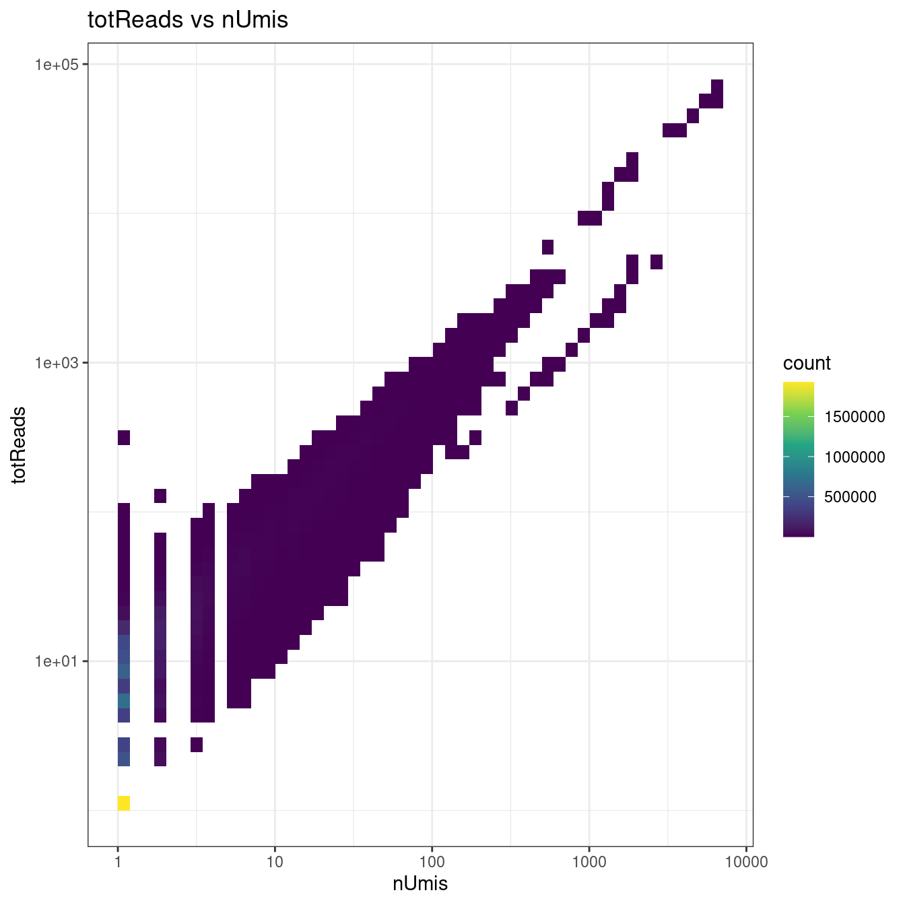
## used (Mb) gc trigger (Mb) max used (Mb)
## Ncells 9288829 496.1 13541980 723.3 13541980 723.3
## Vcells 3021432558 23051.8 4895307436 37348.3 4074004374 31082.25.7 Cell calling for droplet data
For a given sample, amongst the tens of thousands of droplets used in the assay, some will contain a cell while many others will not. The presence of RNA in a droplet will show with non-zero UMI count. This is however not sufficient to infer that the droplet does contain a cell. Indeed, after sample preparation, some cell debris including RNA will still float in the mix. This ambient RNA is unwillingly captured during library preparation and sequenced.
Cellranger generates a count matrix that includes all droplets analysed in the assay. We will now load this ‘raw matrix’ for one sample and draw the distribution of UMI counts.
Distribution of UMI counts:
libSizeDf <- mol.info$data %>%
data.frame() %>%
mutate(umi = as.character(umi)) %>%
group_by(cell) %>%
summarise(nUmis = n(), totReads=sum(reads)) %>%
data.frame()
rm(mol.info)
Library size varies widely, both amongst empty droplets and droplets carrying cells, mostly due to:
- variation in droplet size,
- amplification efficiency,
- sequencing
Most cell counting methods try to identify the library size that best distinguishes empty from cell-carrying droplets.
5.7.1 Mixture model
This method by default fits a mixture of two normal distributions to the logged library sizes:
- one with a small mean for empty droplets
- the other with a higher mean for cell-carrying droplets
set.seed(100)
# get package
library("mixtools")
# have library sizes on a log10 scale
log10_lib_size <- log10(libSizeDf$nUmis)
# fit mixture
mix <- normalmixEM(log10_lib_size,
mu=c(log10(100), log10(1000)),
maxrestarts=50,
epsilon = 1e-03)## number of iterations= 29# plot
plot(mix, which=2, xlab2="log(mol per cell)")
# get density for each distribution:
p1 <- dnorm(log10_lib_size, mean=mix$mu[1], sd=mix$sigma[1])
p2 <- dnorm(log10_lib_size, mean=mix$mu[2], sd=mix$sigma[2])
# find intersection:
if (mix$mu[1] < mix$mu[2]) {
split <- min(log10_lib_size[p2 > p1])
} else {
split <- min(log10_lib_size[p1 > p2])
}
# show split on plot:
abline(v=split, lwd=2)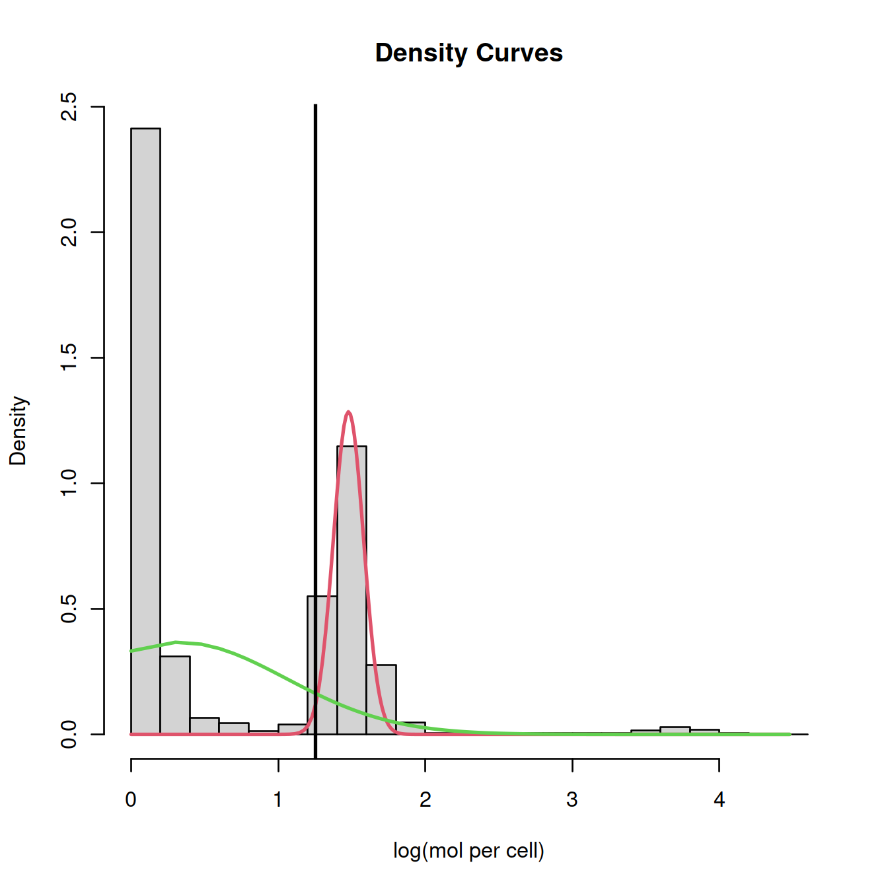
5.7.2 Barcode rank plot
The barcode rank plot shows the library sizes against their rank in decreasing order, for the first 10000 droplets only.
barcode_rank <- rank(-libSizeDf$nUmis)
plot(barcode_rank, libSizeDf$nUmis, xlim=c(1,10000), ylab="library size")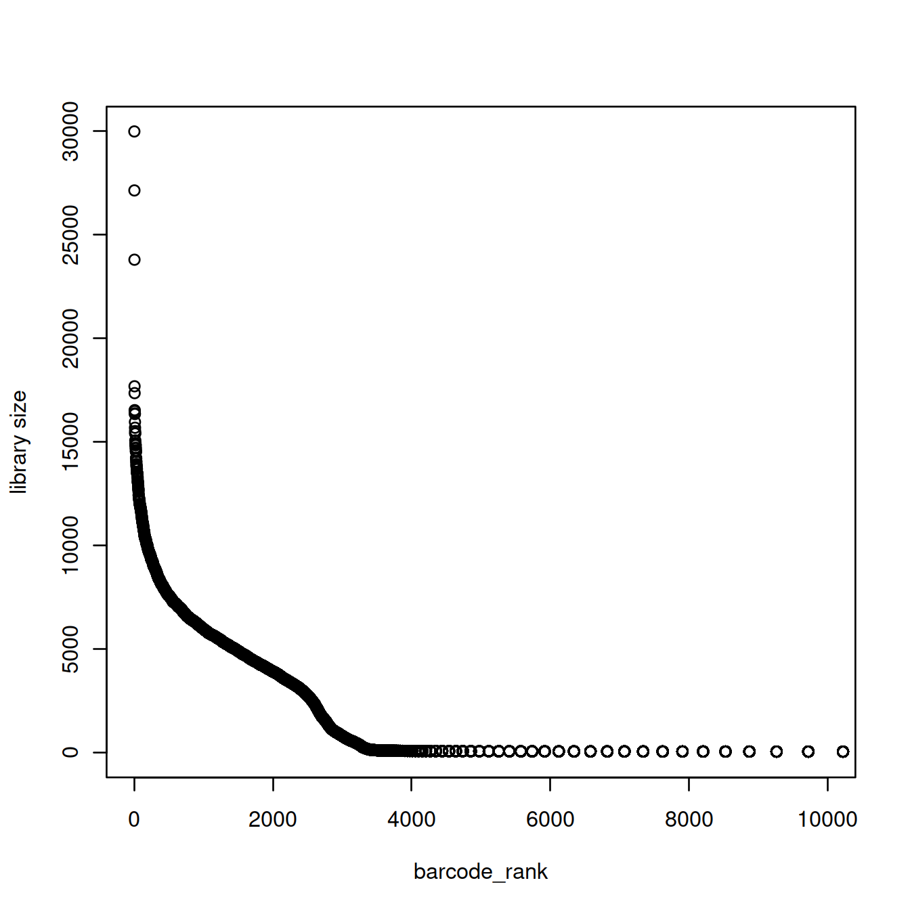
Given the exponential shape of the curve above, library sizes can be shown on the log10 scale:
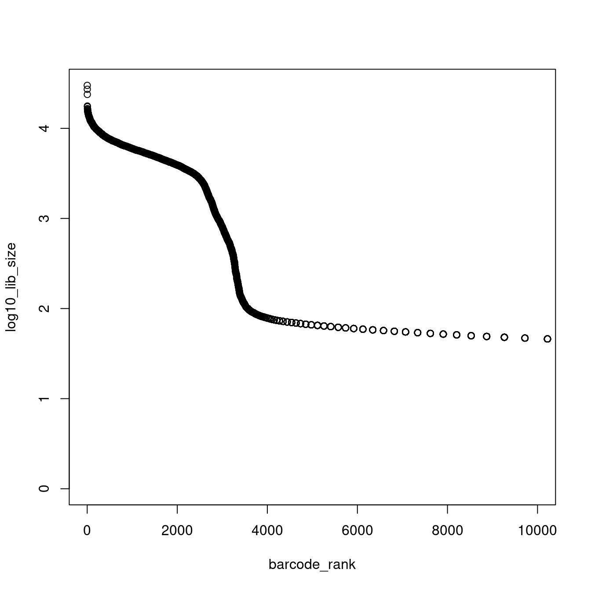
The plot above shows that the majority of droplets have fewer than 100 UMIs, e.g. droplets with rank greater than 4000. We will redraw the plot to focus on droplets with lower ranks, by using the log10 scale for the x-axis.
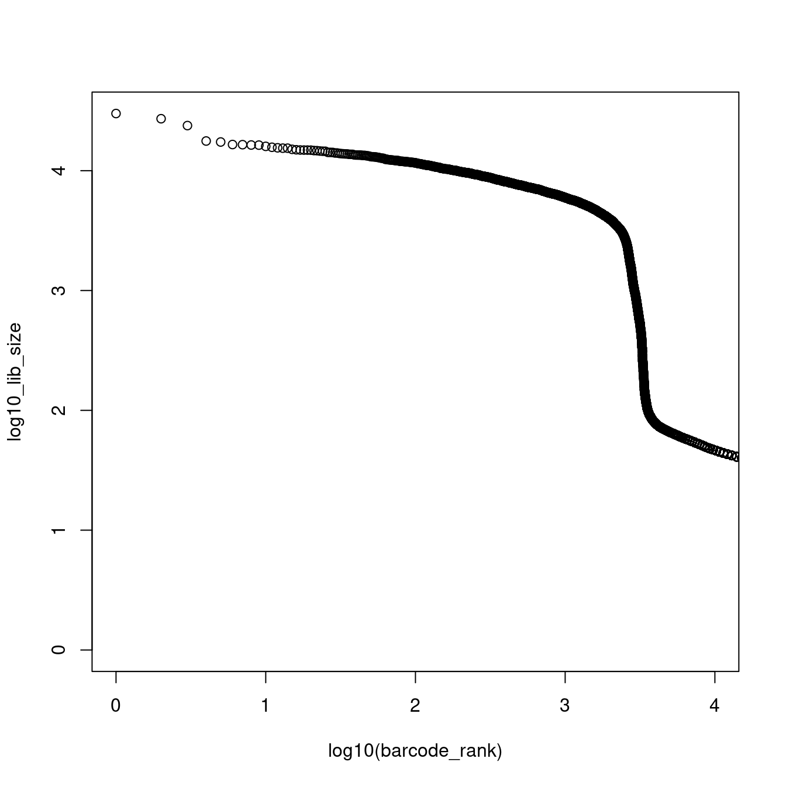
The point on the curve where it drops sharply may be used as the split point. Before that point library sizes are high, because droplets carry a cell. After that point, library sizes are far smaller because droplets do not carry a cell, only ambient RNA (… or do they?).
Here, we could ‘visually’ approximate the number of cells to 2500. There are however more robust and convenient methods.
5.7.3 Inflection point
We could also compute the inflection point of the curve.
o <- order(barcode_rank)
log10_lib_size <- log10_lib_size[o]
barcode_rank <- barcode_rank[o]
rawdiff <- diff(log10_lib_size)/diff(barcode_rank)
inflection <- which(rawdiff == min(rawdiff[100:length(rawdiff)], na.rm=TRUE))
plot(x=log10(barcode_rank),
y=log10_lib_size,
xlim=log10(c(1,10000)))
abline(v=log10(inflection), col="red", lwd=2)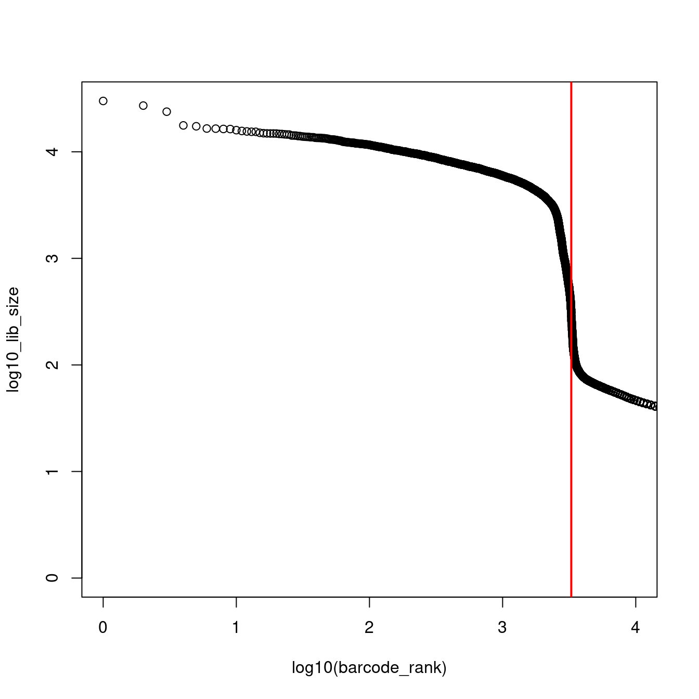
The inflection is at 3279 UMIs (3.5157414 on the log10 scale). 2306 droplets have at least these many UMIs and would thus contain one cell (or more).
5.7.4 Cellranger v1 and v2
Given an expected number of cells, cellranger used to assume a ~10-fold range of library sizes for real cells and estimate this range (cellranger v1 and v2). The threshold was defined as the 99th quantile of the library size, divided by 10.
# approximate number of cells expected:
n_cells <- 2500
# CellRanger
totals <- sort(libSizeDf$nUmis, decreasing = TRUE)
# 99th percentile of top n_cells divided by 10
thresh = totals[round(0.01*n_cells)]/10
#plot(log10(totals), xlim=c(1,10000))
plot(x=log10(seq(1,10000)),
y=log10(totals)[1:10000]
)
abline(h=log10(thresh), col="red", lwd=2)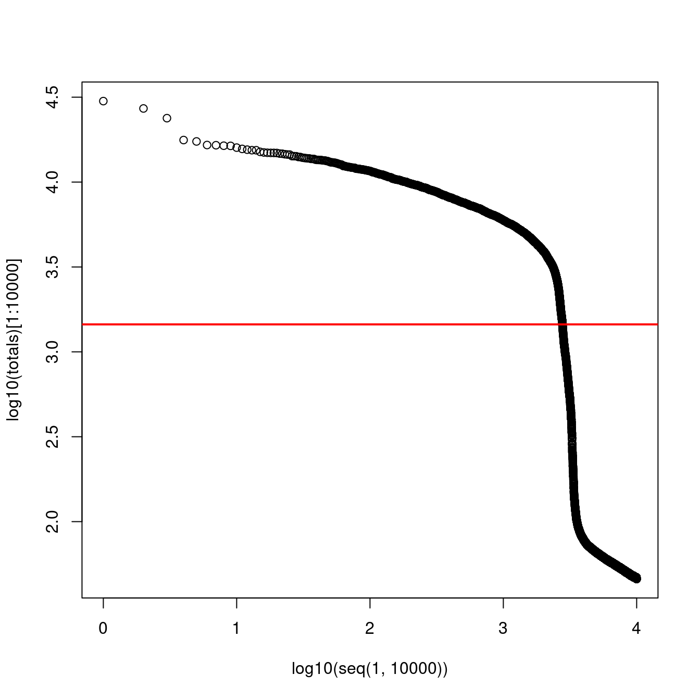
The threshold is at 1452 UMIs and 2773 cells are detected.
5.7.5 DropletUtils and EmptyDrops
The DropletUtils package offers utilities to analyse droplet-based data, including cell counting using the library size as seen above. These simple approaches may exclude droplets with small or quiet cells with low RNA content. The emptyDrops method calls cells by first computing the expression profile for droplets with RNA content so low they almost certainly do not contain any cell: the ‘background’ or ‘ambient’ profile. The method then tests each non-background droplet for significant difference in expression profile.
Let’s first check the knee and inflection methods.
br.out <- barcodeRanks(counts(sce.raw))
plot(br.out$rank, br.out$total, log="xy", xlab="Rank", ylab="Total UMI count")
o <- order(br.out$rank)
lines(br.out$rank[o], br.out$fitted[o], col="red")
abline(h=metadata(br.out)$knee, col="dodgerblue", lty=2)
abline(h=metadata(br.out)$inflection, col="forestgreen", lty=2)
legend("bottomleft", lty=2, col=c("dodgerblue", "forestgreen"),
legend=c("knee", "inflection"))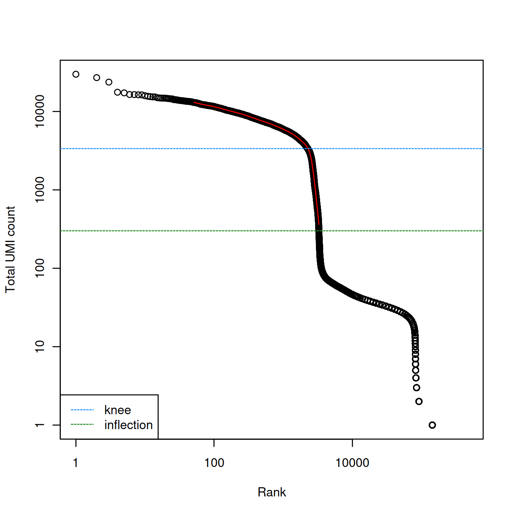
Testing for empty droplets.
We will call cells with a false discovery rate (FDR) of 0.1% so that at most 1 in 1000 droplets called may be empty.
# a bit slow
# significance is computed by simulation so we set a seed for reproducibility
set.seed(100)
# run analysis:
e.out <- emptyDrops(counts(sce.raw))
e.out## DataFrame with 737280 rows and 5 columns
## Total LogProb PValue Limited FDR
## <integer> <numeric> <numeric> <logical> <numeric>
## AAACCTGAGAAACCAT-1 0 NA NA NA NA
## AAACCTGAGAAACCGC-1 0 NA NA NA NA
## AAACCTGAGAAACCTA-1 31 NA NA NA NA
## AAACCTGAGAAACGAG-1 0 NA NA NA NA
## AAACCTGAGAAACGCC-1 0 NA NA NA NA
## ... ... ... ... ... ...
## TTTGTCATCTTTACAC-1 0 NA NA NA NA
## TTTGTCATCTTTACGT-1 1 NA NA NA NA
## TTTGTCATCTTTAGGG-1 0 NA NA NA NA
## TTTGTCATCTTTAGTC-1 26 NA NA NA NA
## TTTGTCATCTTTCCTC-1 0 NA NA NA NANAs are assigned to droplets used to compute the ambient profile.
Get numbers of droplets in each class defined by FDR and the cut-off used:
## Mode FALSE TRUE NA's
## logical 487 3075 733718The test significance is computed by permutation. For each droplet tested, the number of permutations may limit the value of the p-value. This information is available in the ‘Limited’ column. If ‘Limited’ is ‘TRUE’ for any non-significant droplet, the number of permutations was too low, should be increased and the analysis re-run.
## Limited
## Sig FALSE TRUE
## FALSE 487 0
## TRUE 76 2999Let’s check that the background comprises only empty droplets. If the droplets used to define the background profile are indeed empty, testing them should result in a flat distribution of p-values. Let’s test the ‘ambient’ droplets and draw the p-value distribution.
set.seed(100)
limit <- 100
all.out <- emptyDrops(counts(sce.raw), lower=limit, test.ambient=TRUE)
hist(all.out$PValue[all.out$Total <= limit & all.out$Total > 0],
xlab="P-value", main="", col="grey80") 
The distribution of p-values looks uniform with no large peak for small values: no cell in these droplets.
To evaluate the outcome of the analysis, we will plot the strength of the evidence against library size.
Number of cells detected: 3075.
The plot plot shows the strength of the evidence against the library size. Each point is a droplet coloured:
- in black if without cell,
- in red if with a cell (or more)
- in green if with a cell (or more) as defined with
emptyDropsbut not the inflection method.
# colour:
cellColour <- ifelse(is.cell, "red", "black") # rep("black", nrow((e.out)))
# boolean for presence of cells as defined by the inflection method
tmpBoolInflex <- e.out$Total > metadata(br.out)$inflection
# boolean for presence of cells as defined by the emptyDrops method
tmpBoolSmall <- e.out$FDR <= 0.001
tmpBoolRecov <- !tmpBoolInflex & tmpBoolSmall
cellColour[tmpBoolRecov] <- "green" # 'recovered' cells
# plot strength of significance vs library size
plot(log10(e.out$Total),
-e.out$LogProb,
col=cellColour,
xlim=c(2,max(log10(e.out$Total))),
xlab="Total UMI count",
ylab="-Log Probability")
# add point to show 'recovered' cell on top
points(log10(e.out$Total)[tmpBoolRecov],
-e.out$LogProb[tmpBoolRecov],
pch=16,
col="green")
Let’s filter out empty droplets.
## used (Mb) gc trigger (Mb) max used (Mb)
## Ncells 9521622 508.6 16305648 870.9 16305648 870.9
## Vcells 1404540205 10715.8 2765812427 21101.5 2297115936 17525.7And check the new SCE object:
## class: SingleCellExperiment
## dim: 33538 3075
## metadata(1): Samples
## assays(1): counts
## rownames(33538): ENSG00000243485 ENSG00000237613 ... ENSG00000277475
## ENSG00000268674
## rowData names(3): ID Symbol Type
## colnames(3075): AAACCTGAGACTTTCG-1 AAACCTGGTCTTCAAG-1 ...
## TTTGTCACAGGCTCAC-1 TTTGTCAGTTCGGCAC-1
## colData names(2): Sample Barcode
## reducedDimNames(0):
## altExpNames(0):Cell calling in cellranger v3 uses a method similar to emptyDrops() and a ‘filtered matrix’ is generated that only keeps droplets deemed to contain a cell (or more). We will load these filtered matrices now.
5.8 Load filtered matrices
Each sample was analysed with cellranger separately. We load filtered matrices one sample at a time, showing for each the name and number of features and cells.
# load data:
# a bit slow
# use 'cache.lazy = FALSE' to avoid 'long vectors not supported yet' when 'cache=TRUE'
sce.list <- vector("list", length = nrow(sampleSheet))
for (i in 1:nrow(sampleSheet))
{
print(sprintf("'Run' %s, 'Sample.Name' %s", sampleSheet[i,"Run"], sampleSheet[i,"Sample.Name"]))
sample.path <- sprintf("%s/%s/%s/outs/filtered_feature_bc_matrix/",
sprintf("%s/%s/grch38300",
projDir,
ifelse(sampleSheet[i,"source_name"] == "ABMMC",
"Hca",
"CaronBourque2020")),
sampleSheet[i,"Run"],
sampleSheet[i,"Run"])
sce.list[[i]] <- read10xCounts(sample.path)
print(dim(sce.list[[i]]))
}## [1] "'Run' SRR9264343, 'Sample.Name' GSM3872434"
## [1] 33538 3088
## [1] "'Run' SRR9264344, 'Sample.Name' GSM3872435"
## [1] 33538 6678
## [1] "'Run' SRR9264345, 'Sample.Name' GSM3872436"
## [1] 33538 5054
## [1] "'Run' SRR9264346, 'Sample.Name' GSM3872437"
## [1] 33538 6096
## [1] "'Run' SRR9264347, 'Sample.Name' GSM3872438"
## [1] 33538 5442
## [1] "'Run' SRR9264348, 'Sample.Name' GSM3872439"
## [1] 33538 5502
## [1] "'Run' SRR9264349, 'Sample.Name' GSM3872440"
## [1] 33538 4126
## [1] "'Run' SRR9264350, 'Sample.Name' GSM3872441"
## [1] 33538 3741
## [1] "'Run' SRR9264351, 'Sample.Name' GSM3872442"
## [1] 33538 978
## [1] "'Run' SRR9264352, 'Sample.Name' GSM3872442"
## [1] 33538 1150
## [1] "'Run' SRR9264353, 'Sample.Name' GSM3872443"
## [1] 33538 4964
## [1] "'Run' SRR9264354, 'Sample.Name' GSM3872444"
## [1] 33538 4255
## [1] "'Run' MantonBM1, 'Sample.Name' MantonBM1"
## [1] 33538 23283
## [1] "'Run' MantonBM2, 'Sample.Name' MantonBM2"
## [1] 33538 25055
## [1] "'Run' MantonBM3, 'Sample.Name' MantonBM3"
## [1] 33538 24548
## [1] "'Run' MantonBM4, 'Sample.Name' MantonBM4"
## [1] 33538 26478
## [1] "'Run' MantonBM5, 'Sample.Name' MantonBM5"
## [1] 33538 26383
## [1] "'Run' MantonBM6, 'Sample.Name' MantonBM6"
## [1] 33538 22801
## [1] "'Run' MantonBM7, 'Sample.Name' MantonBM7"
## [1] 33538 24372
## [1] "'Run' MantonBM8, 'Sample.Name' MantonBM8"
## [1] 33538 24860Let’s combine all 20 samples into a single object.
We first check the feature lists are identical.
# check row names are the same
# compare to that for the first sample
rowNames1 <- rownames(sce.list[[1]])
for (i in 2:nrow(sampleSheet))
{
print(identical(rowNames1, rownames(sce.list[[i]])))
}## [1] TRUE
## [1] TRUE
## [1] TRUE
## [1] TRUE
## [1] TRUE
## [1] TRUE
## [1] TRUE
## [1] TRUE
## [1] TRUE
## [1] TRUE
## [1] TRUE
## [1] TRUE
## [1] TRUE
## [1] TRUE
## [1] TRUE
## [1] TRUE
## [1] TRUE
## [1] TRUE
## [1] TRUEA cell barcode comprises the actual sequence and a ‘group ID’, e.g. AAACCTGAGAAACCAT-1. The latter helps distinguish cells with identical barcode sequence but come from different samples. As each sample was analysed separately, the group ID is set to 1 in all data sets. To pool these data sets we first need to change group IDs so cell barcodes are unique across all samples. We will use the position of the sample in the sample sheet.
# subset 2000 cells:
# mind that is not mentioned in Rds file names ...
if(ncol(sce.list[[1]]) < 2000)
{
sce <- sce.list[[1]]
} else {
sce <- sce.list[[1]][, sample(ncol(sce.list[[1]]), 2000)]
}
colData(sce)$Barcode <- gsub("([0-9])$", 1, colData(sce)$Barcode)
print(head(colData(sce)$Barcode))## [1] "GATGCTAGTATCAGTC-1" "GTCCTCAGTCCAAGTT-1" "CGCGTTTAGGCTAGCA-1"
## [4] "GGATTACGTGCGAAAC-1" "CGTTGGGCAGCCAATT-1" "GTGCGGTGTCATTAGC-1"## [1] "CGTCCATAGATTACCC-1" "CAGCCGACATCCCATC-1" "GCAGCCACACTTCTGC-1"
## [4] "CAAGATCGTCGGCACT-1" "GTAACGTTCCCATTAT-1" "TTCGGTCAGGGTTCCC-1"for (i in 2:nrow(sampleSheet))
{
if(ncol(sce.list[[i]]) < 2000)
{
sce.tmp <- sce.list[[i]]
} else {
sce.tmp <- sce.list[[i]][, sample(ncol(sce.list[[i]]), 2000)]
}
colData(sce.tmp)$Barcode <- gsub("([0-9])$", i, colData(sce.tmp)$Barcode)
sce <- cbind(sce, sce.tmp)
print(tail(colData(sce)$Barcode, 2))
}## [1] "AGAGTGGCACCAGTTA-2" "AACACGTGTACCTACA-2"
## [1] "CGGCTAGAGCTGAACG-3" "TAGCCGGAGTTAGCGG-3"
## [1] "ACACCAAGTCAGAAGC-4" "AAGGTTCAGGCCGAAT-4"
## [1] "AGGGTGAAGAGTCGGT-5" "CTGCGGAGTGAGTATA-5"
## [1] "GGCGACTGTGTTTGGT-6" "TTGGAACAGTGTACTC-6"
## [1] "TGTGGTACACTTACGA-7" "ACTGAGTTCTATCGCC-7"
## [1] "GTCACAACAATCGGTT-8" "CTACATTGTCTCTCGT-8"
## [1] "TTTGGTTGTGCATCTA-9" "TTTGTCACAGCTCGAC-9"
## [1] "TTTGTCAGTAAATGTG-10" "TTTGTCAGTACAAGTA-10"
## [1] "TGCGGGTAGCGTAGTG-11" "CTAGAGTCAAAGTGCG-11"
## [1] "GCAATCAAGGCTATCT-12" "GGGTCTGCATAAGACA-12"
## [1] "TATCTCAGTCATATCG-13" "TCGTACCTCTGGTATG-13"
## [1] "CGTTCTGCAGCTGTTA-14" "TCGCGAGTCATCTGCC-14"
## [1] "ACTTACTCAGGTTTCA-15" "ACTGCTCTCGGTTAAC-15"
## [1] "AGAGTGGCAAAGGCGT-16" "ACACCCTAGATCCCGC-16"
## [1] "GCTGGGTAGGCTCATT-17" "TGTTCCGCACAGACAG-17"
## [1] "CTACATTGTAGCGATG-18" "TGGGCGTCACACCGCA-18"
## [1] "TTCCCAGCAGGGTACA-19" "GTTCTCGGTCCTCCAT-19"
## [1] "GCTGGGTCATAACCTG-20" "TATGCCCCAGCGTCCA-20"We now add the sample sheet information to the object metadata.
colDataOrig <- colData(sce)
# split path:
tmpList <- strsplit(colDataOrig$Sample, split="/")
# get Run ID, to use to match sample in the meta data and sample sheet objects:
tmpVec <- unlist(lapply(tmpList, function(x){x[9]}))
colData(sce)$Run <- tmpVec
# remove path to filtered matrix files by sample name in 'Sample':
colData(sce)$Sample <- NULL
# merge:
colData(sce) <- colData(sce) %>%
data.frame %>%
left_join(sampleSheet[,splShtColToKeep], "Run") %>%
relocate() %>%
DataFrameLet’s save the object for future reference.
5.9 Properties of scRNA-seq data
The number and identity of genes detected in a cell vary across cells: the total number of genes detected across all cells is far larger than the number of genes detected in each cell.
Total number of genes detected across cells:
# for each gene, compute total number of UMIs across all cells,
# then counts genes with at least one UMI:
sum(rowSums(counts(sce)) > 0)## [1] 25116Summary of the distribution of the number of genes detected per cell:
# for each cell count number of genes with at least 1 UMI
# then compute distribution moments:
summary(colSums(counts(sce) > 0))## Min. 1st Qu. Median Mean 3rd Qu. Max.
## 26 717 940 1228 1521 6586Now let’s plot for each gene the total number of UMIs and the proportion of cells that express it. Lowly expressed genes tend to be detected in a large proportion of cells. The higher the overall expression the lower the proportion of cells.
# randomly subset 1000 cells.
tmpCounts <- counts(sce)[,sample(1000)]
plot(rowSums(tmpCounts),
rowMeans(tmpCounts > 0),
log = "x",
xlab="total number of UMIs",
ylab="proportion of cells expressing the gene"
)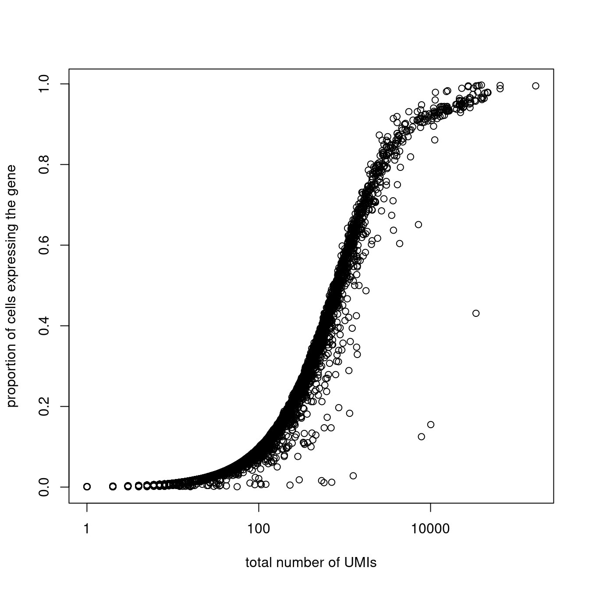
Count genes that are not ‘expressed’ (detected):
## not.expressed
## FALSE TRUE
## 25116 8422Plot the percentage of counts per gene and show genes with the highest UMI counts:
#Compute the relative expression of each gene per cell
rel_expression <- t( t(counts(sce)) / Matrix::colSums(counts(sce))) * 100
rownames(rel_expression) <- rowData(sce)$Symbol
most_expressed <- sort(Matrix::rowSums( rel_expression ),T)[20:1] / ncol(sce)
boxplot( as.matrix(t(rel_expression[names(most_expressed),])),
cex=.1,
las=1,
xlab="% total count per cell",
col=scales::hue_pal()(20)[20:1],
horizontal=TRUE)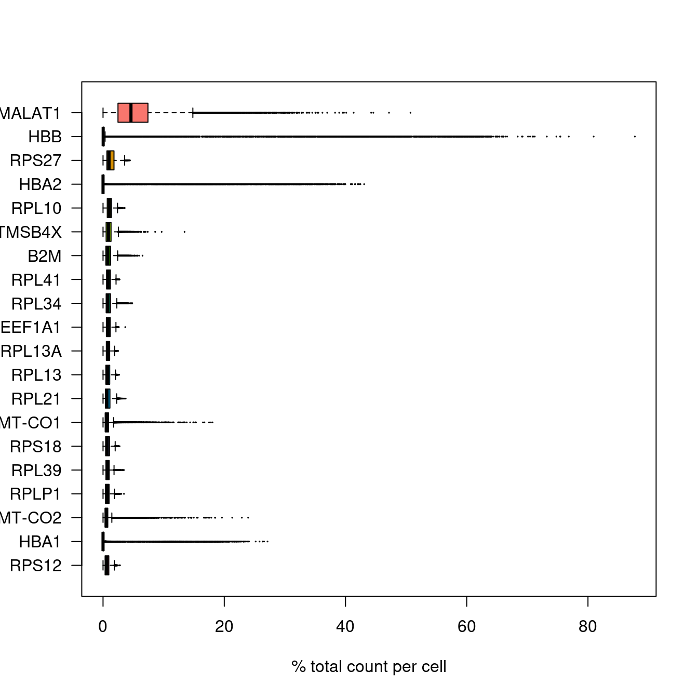
Mind that we have combined two data sets here. It may be interesting to count non-expressed genes in each set separately.
5.10 Quality control
Cell calling performed above does not inform on the quality of the library in each of the droplets kept. Poor-quality cells, or rather droplets, may be caused by cell damage during dissociation or failed library preparation. They usually have low UMI counts, few genes detected and/or high mitochondrial content. The presence may affect normalisation, assessment of cell population heterogeneity, clustering and trajectory:
- Normalisation: Contaminating genes, ‘the ambient RNA’, are detected at low levels in all libraires. In low quality libraries with low RNA content, scaling will increase counts for these genes more than for better-quality cells, resulting in their apparent upregulation in these cells and increased variance overall.
- Cell population heterogeneity: variance estimation and dimensionality reduction with PCA where the first principal component will be correlated with library size, rather than biology.
- Clustering and trajectory: higher mitochondrial and/or nuclear RNA content may cause low-quality cells to cluster separately or form states or trajectories between distinct cell types.
We will now exclude lowly expressed features and identify low-quality cells using the following metrics mostly:
- library size, i.e. the total number of UMIs per cell
- number of features detected per cell
- mitochondrial content, i.e. the proportion of UMIs that map to mitochondrial genes, with higher values consistent with leakage from the cytoplasm of RNA, but not mitochondria
We will first annotate genes, to know which ones are mitochondrial, then use scater’s addPerCellQC() to compute various metrics.
Annotate genes with biomaRt.
# retrieve the feature information
gene.info <- rowData(sce)
# setup the biomaRt connection to Ensembl using the correct species genome (hsapiens_gene_ensembl)
ensembl <- useEnsembl(biomart='ensembl',
dataset='hsapiens_gene_ensembl',
mirror = "www")
#ensembl = useMart(biomart="ensembl",
# dataset='hsapiens_gene_ensembl',
# host = "www.ensembl.org") # ensemblRedirect = FALSE
# retrieve the attributes of interest from biomaRt using the Ensembl gene ID as the key
# beware that this will only retrieve information for matching IDs
gene_symbol <- getBM(attributes=c('ensembl_gene_id',
'external_gene_name',
'chromosome_name',
'start_position',
'end_position',
'strand'),
filters='ensembl_gene_id',
mart=ensembl,
values=gene.info[, 1])
# create a new data frame of the feature information
gene.merge <- merge(gene_symbol, gene.info, by.x=c('ensembl_gene_id'), by.y=c('ID'), all.y=TRUE)
rownames(gene.merge) <- gene.merge$ensembl_gene_id
# set the order for the same as the original gene information
gene.merge <- gene.merge[gene.info[, 1], ]
# reset the rowdata on the SCE object to contain all of this information
rowData(sce) <- gene.merge# slow
# Write object to file
tmpFn <- sprintf("%s/%s/Robjects/sce_postBiomart.Rds",
projDir, outDirBit)
saveRDS(sce, tmpFn)# Read object in:
tmpFn <- sprintf("%s/%s/Robjects/sce_postBiomart.Rds",
projDir, outDirBit)
sce <- readRDS(tmpFn)Number of genes per chromosome, inc. 13 on the mitochondrial genome:
# number of genes per chromosome
table(rowData(sce)$chromosome_name) %>%
as.data.frame() %>%
dplyr::rename(Chromosome=Var1, NbGenes=Freq) %>%
datatable(rownames = FALSE)Calculate and store QC metrics for genes with addPerFeatureQC() and for cells with addPerCellQC().
# long
# for genes
sce <- addPerFeatureQC(sce)
head(rowData(sce)) %>%
as.data.frame() %>%
datatable(rownames = FALSE) # ENS IDThree columns of interest for cells:
- ‘sum’: total UMI count
- ‘detected’: number of features (genes) detected
- ‘subsets_Mito_percent’: percentage of reads mapped to mitochondrial transcripts
# for cells
sce <- addPerCellQC(sce, subsets=list(Mito=is.mito))
head(colData(sce)) %>%
as.data.frame() %>%
datatable(rownames = FALSE)# Write object to file
tmpFn <- sprintf("%s/%s/Robjects/sce_postAddQc.Rds",
projDir, outDirBit)
saveRDS(sce, tmpFn)# Read object in:
tmpFn <- sprintf("%s/%s/Robjects/sce_postAddQc.Rds",
projDir, outDirBit)
sce <- readRDS(tmpFn)5.10.1 QC metric distribution
Overall:
par(mfrow=c(1, 2))
hist(log10(sce$sum), breaks=20, col="grey80", xlab="Log-total UMI count", main="")
hist(sce$subsets_Mito_percent, breaks=20, col="grey80", xlab="Proportion of reads in mitochondrial genes", main="")
abline(v=20, lty=2, col='purple')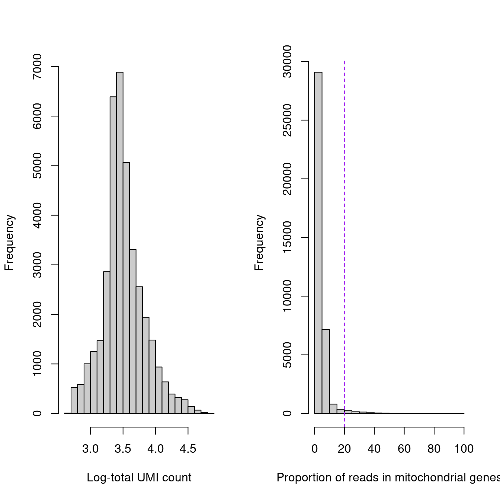
Per sample group:
sce$source_name <- factor(sce$source_name)
sce$block <- sce$source_name
sce$setName <- ifelse(grepl("ABMMC", sce$source_name), "Hca", "Caron")Library size (‘Total count’):
p <- plotColData(sce, x="block", y="sum",
other_fields="setName") + #facet_wrap(~setName) +
scale_y_log10() + ggtitle("Total count")
p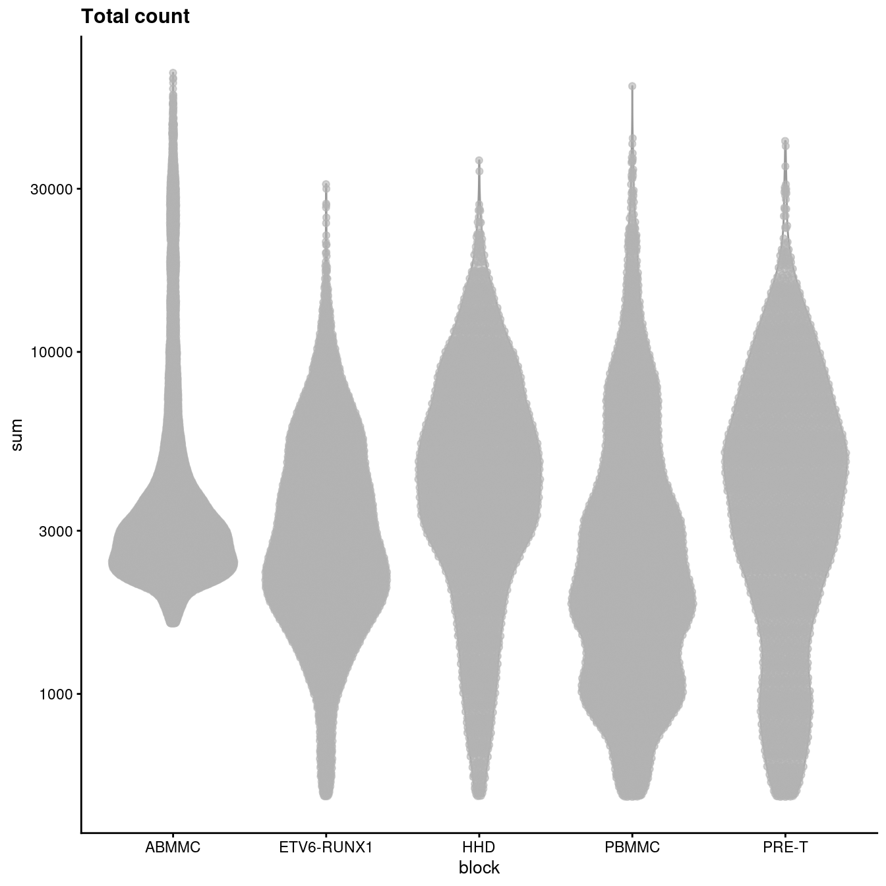
Number of genes (‘detected’):
p <- plotColData(sce, x="block", y="detected",
other_fields="setName") + #facet_wrap(~setName) +
scale_y_log10() + ggtitle("Detected features")
p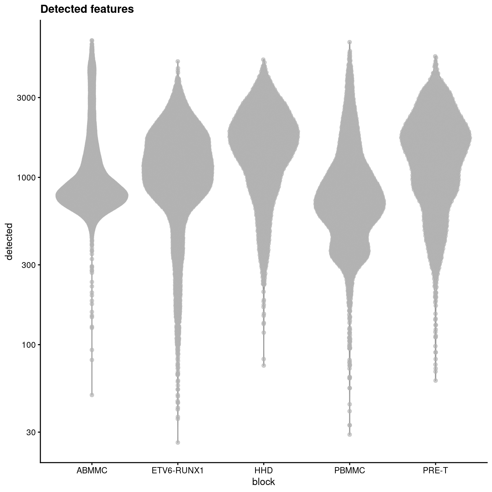
Mitochondrial content (‘subsets_Mito_percent’):
p <- plotColData(sce, x="block", y="subsets_Mito_percent",
other_fields="setName") + # facet_wrap(~setName) +
ggtitle("Mito percent")
p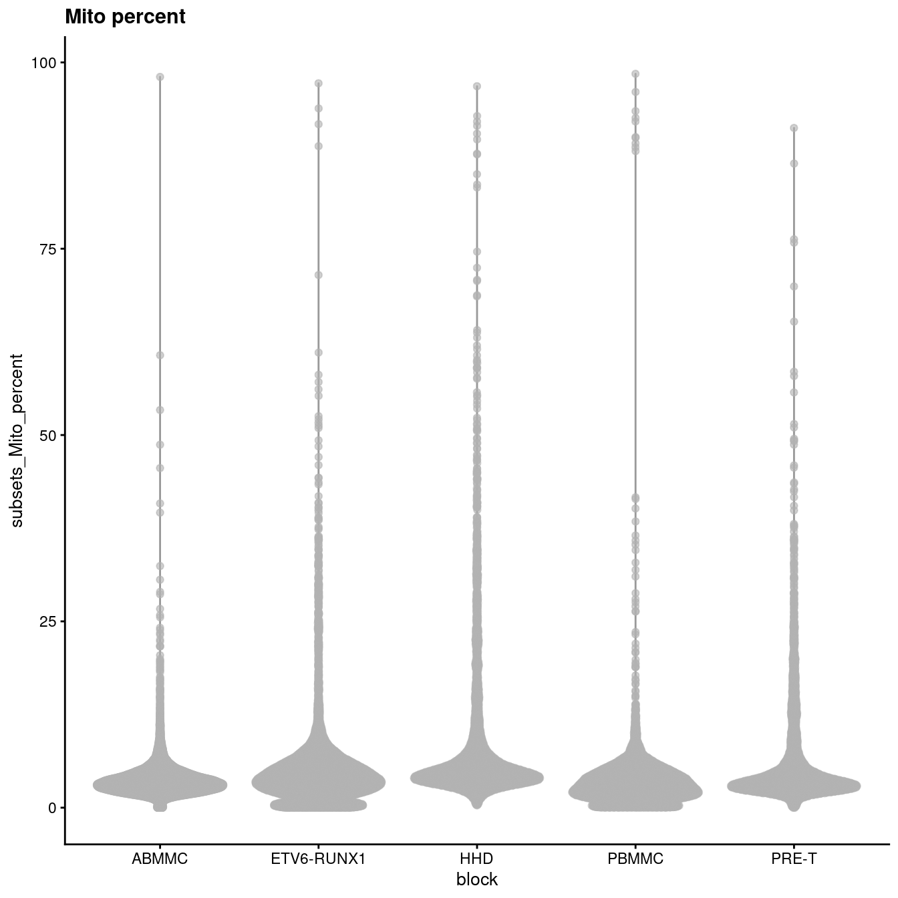
tmpFn <- sprintf("%s/%s/%s/qc_metricDistrib_plotColData2.png", projDir, outDirBit, qcPlotDirBit)
png(tmpFn)
# violin plots
gridExtra::grid.arrange(
plotColData(sce, x="block", y="sum",
other_fields="setName") + #facet_wrap(~setName) +
scale_y_log10() + ggtitle("Total count"),
plotColData(sce, x="block", y="detected",
other_fields="setName") + #facet_wrap(~setName) +
scale_y_log10() + ggtitle("Detected features"),
plotColData(sce, x="block", y="subsets_Mito_percent",
other_fields="setName") + # facet_wrap(~setName) +
ggtitle("Mito percent"),
ncol=1
)
dev.off()## png
## 2tmpFn <- sprintf("../%s/qc_metricDistrib_plotColData2.png", qcPlotDirBit)
knitr::include_graphics(tmpFn, auto_pdf = TRUE)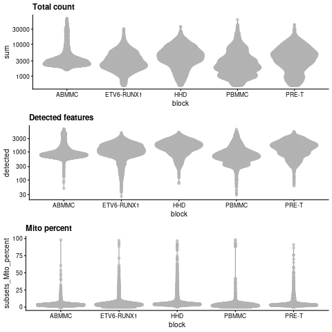
Correlation between the number of genes detected and library size (‘detected’ against ‘sum’):
sp <- ggplot(data.frame(colData(sce)),
aes(x=sum,
y=detected,
col=subsets_Mito_percent)) +
geom_point()
sp + facet_wrap(~source_name)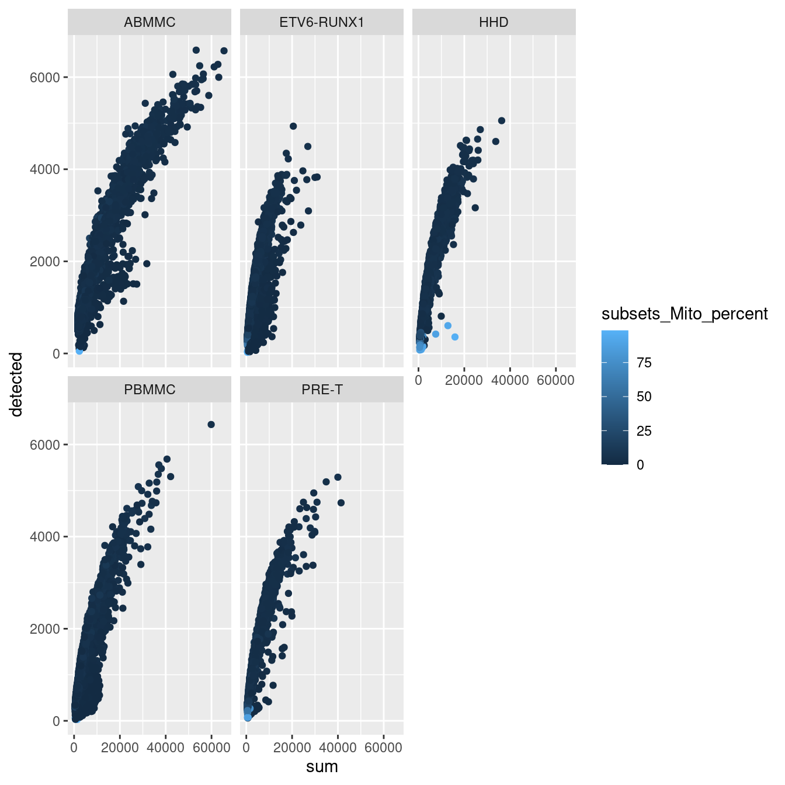
5.11 Identification of low-quality cells with adaptive thresholds
One can use hard threshold for the library size, number of genes detected and mitochondrial content. These will however vary across runs. It may therefore be preferable to rely on outlier detection to identify cells that markerdly differ from most cells.
We saw above that the distribution of the QC metrics is close to Normal. Hence, we can detect outlier using the median and the median absolute deviation (MAD) from the median (not the mean and the standard deviation that both are sensitive to outliers).
For a given metric, an outlier value is one that lies over some number of MADs away from the median. A cell will be excluded if it is an outlier in the part of the range to avoid, for example low gene counts, or high mitochondrial content. For a normal distribution, a threshold defined with a distance of 3 MADs from the median retains about 99% of values.
5.11.1 Library size
For the library size we use the log scale to avoid negative values for lower part of the distribution.
## qc.lib2
## FALSE TRUE
## 37795 333Threshold values:
## lower higher
## 576.4435 Inf5.11.2 Number of genes
For the number of genes detected we also use the log scale to avoid negative values for lower part of the distribution.
## qc.nexprs2
## FALSE TRUE
## 37723 405Threshold values:
## lower higher
## 204.1804 Inf5.11.3 Mitochondrial content
For the mitochondrial content the exclusion zone is in the higher part of the distribution.
## qc.mito2
## FALSE TRUE
## 35755 2373Threshold values:
## lower higher
## -Inf 8.7151145.11.4 Summary
discard2 <- qc.lib2 | qc.nexprs2 | qc.mito2
# Summarize the number of cells removed for each reason.
DataFrame(LibSize=sum(qc.lib2),
NExprs=sum(qc.nexprs2),
MitoProp=sum(qc.mito2),
Total=sum(discard2))## DataFrame with 1 row and 4 columns
## LibSize NExprs MitoProp Total
## <integer> <integer> <integer> <integer>
## 1 333 405 2373 29005.11.5 All steps at once
The steps above may be run at once with quickPerCellQC():
5.11.6 Assumptions
Data quality depends on the tissue analysed, some being difficult to dissociate, e.g. brain, so that one level of QC stringency will not fit all data sets.
Filtering based on QC metrics as done here assumes that these QC metrics are not correlated with biology. This may not necessarily be true in highly heterogenous data sets where some cell types represented by good-quality cells may have low RNA content or high mitochondrial content.
5.12 Experimental factors
The two data sets analysed here may have been obtained in experiments with different settings, such as cell preparation or sequencing depth. Such differences between these two batches would affect the adaptive thesholds discussed above. We will now perform QC in each batch separately.
We will use the quickPerCellQC() ‘batch’ option.
batch.reasons <- quickPerCellQC(colData(sce),
percent_subsets=c("subsets_Mito_percent"),
batch=sce$setName)
colSums(as.matrix(batch.reasons)) %>%
as.data.frame() %>%
datatable(rownames = TRUE)Fewer cells are discarded, in particular because of small library size and low gene number.
But the differences are deeper as the two sets only partially overlap:
##
## FALSE TRUE
## FALSE 34880 348
## TRUE 805 2095Library size:
plotColData(sce,
x="block", y="sum",
colour_by="discard",
other_fields="setName") +
scale_y_log10() + ggtitle("Total count")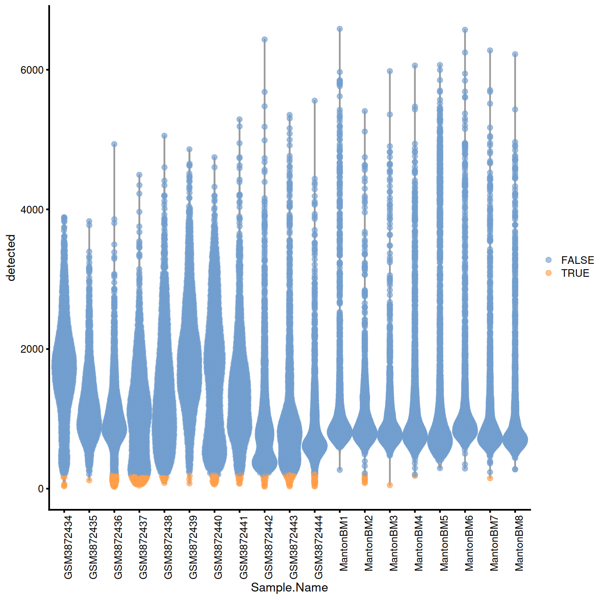
Number of genes detected:
plotColData(sce,
x="block", y="detected",
colour_by="discard",
other_fields="setName") +
scale_y_log10() + ggtitle("Detected features")plotColData(sce,
x="block", y="detected",
colour_by="discard",
other_fields="setName") +
facet_wrap(~colour_by) +
scale_y_log10() + ggtitle("Detected features")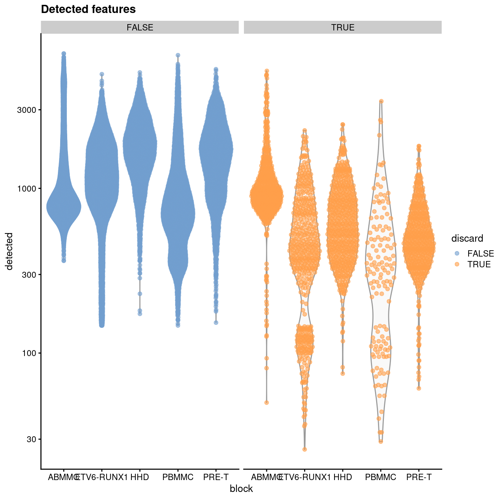
Mitochondrial content:
plotColData(sce,
x="block", y="subsets_Mito_percent",
colour_by="discard",
other_fields="setName") +
ggtitle("Mito percent")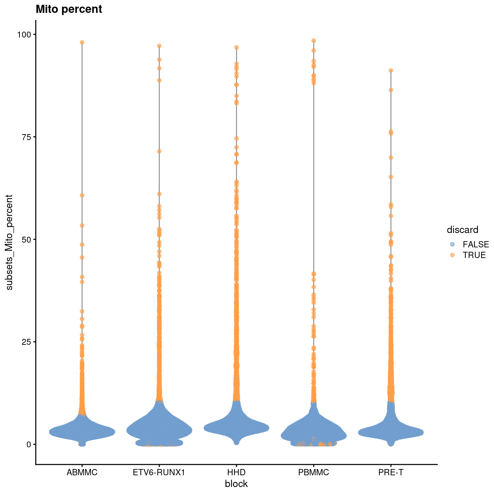
5.12.1 Identify poor-quality batches
We will now consider the ‘sample’ batch to illustrate how to identify batches with overall low quality or different from other batches. Let’s compare thresholds across sample groups.
5.12.1.1 Number of genes detected
# compute
discard.nexprs <- isOutlier(sce$detected, log=TRUE, type="lower", batch=sce$Sample.Name)
nexprs.thresholds <- attr(discard.nexprs, "thresholds")["lower",]
nexprs.thresholds %>%
round(0) %>%
as.data.frame() %>%
datatable(rownames = TRUE)Without block:
# plots - without blocking
discard.nexprs.woBlock <- isOutlier(sce$detected, log=TRUE, type="lower")
without.blocking <- plotColData(sce, x="Sample.Name", y="detected",
colour_by=I(discard.nexprs.woBlock))
without.blocking + theme(axis.text.x = element_text(angle = 90, hjust = 1))With block:
# plots - with blocking
with.blocking <- plotColData(sce, x="Sample.Name", y="detected",
colour_by=I(discard.nexprs))
with.blocking + theme(axis.text.x = element_text(angle = 90, hjust = 1))5.12.1.1.1 Mitochondrial content
discard.mito <- isOutlier(sce$subsets_Mito_percent, type="higher", batch=sce$Sample.Name)
mito.thresholds <- attr(discard.mito, "thresholds")["higher",]
mito.thresholds %>%
round(0) %>%
as.data.frame() %>%
datatable(rownames = TRUE)Without block:
# plots - without blocking
discard.mito.woBlock <- isOutlier(sce$subsets_Mito_percent, type="higher")
without.blocking <- plotColData(sce, x="Sample.Name", y="subsets_Mito_percent",
colour_by=I(discard.mito.woBlock))
without.blocking + theme(axis.text.x = element_text(angle = 90, hjust = 1))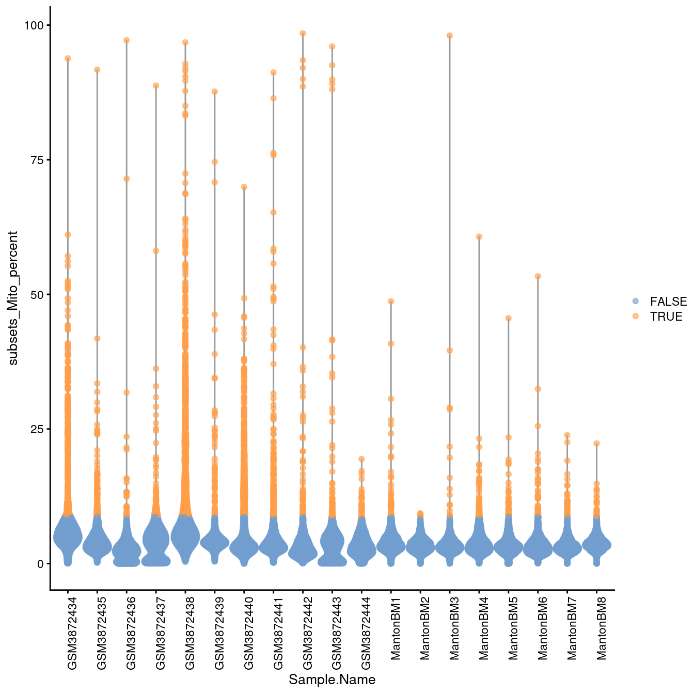
With block:
# plots - with blocking
with.blocking <- plotColData(sce, x="Sample.Name", y="subsets_Mito_percent",
colour_by=I(discard.mito))
with.blocking + theme(axis.text.x = element_text(angle = 90, hjust = 1))
5.12.1.2 Samples to check
Names of samples with a ‘low’ threshold for the number of genes detected:
## character(0)Names of samples with a ‘high’ threshold for mitocondrial content:
## [1] "GSM3872434" "GSM3872437" "GSM3872438" "GSM3872443"5.12.2 QC metrics space
A similar approach exists to identify outliers using a set of metrics together. We will the same QC metrics as above.
# slow
stats <- cbind(log10(sce$sum),
log10(sce$detected),
sce$subsets_Mito_percent)
library(robustbase)
outlying <- adjOutlyingness(stats, only.outlyingness = TRUE)
multi.outlier <- isOutlier(outlying, type = "higher")## Mode FALSE TRUE
## logical 34298 3830Compare with previous filtering:
## multi.outlier
## FALSE TRUE
## FALSE 33461 2224
## TRUE 837 16065.12.3 QC PCA
One can also perform a principal components analysis (PCA) on cells, based on the column metadata in a SingleCellExperiment object. Here we will only use the library size, the number of genes detected (which is correlated with library size) and the mitochondrial content.
sce <- runColDataPCA(sce, variables=list(
"sum", "detected", "subsets_Mito_percent"),
outliers=TRUE)
#reducedDimNames(sce)
#head(reducedDim(sce))
#head(colData(sce))
#p <- plotReducedDim(sce, dimred="PCA_coldata", colour_by = "Sample.Name")
p <- plotReducedDim(sce, dimred="PCA_coldata", colour_by = "outlier")
p + facet_wrap(~sce$discard)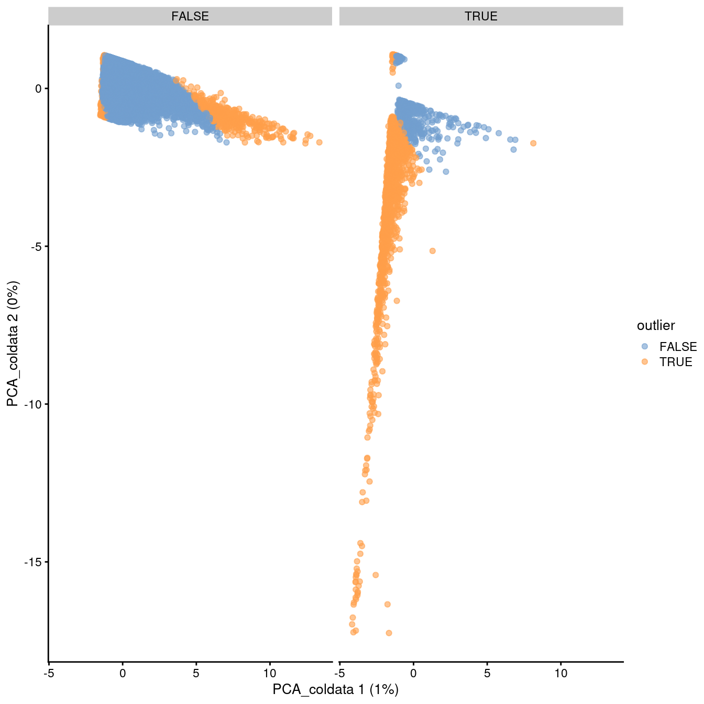
Compare with previous filtering:
##
## FALSE TRUE
## FALSE 35001 684
## TRUE 769 1674##
## multi.outlier FALSE TRUE
## FALSE 33675 623
## TRUE 2095 17355.12.4 Other diagnostic plots
Mitochondrial content against library size:
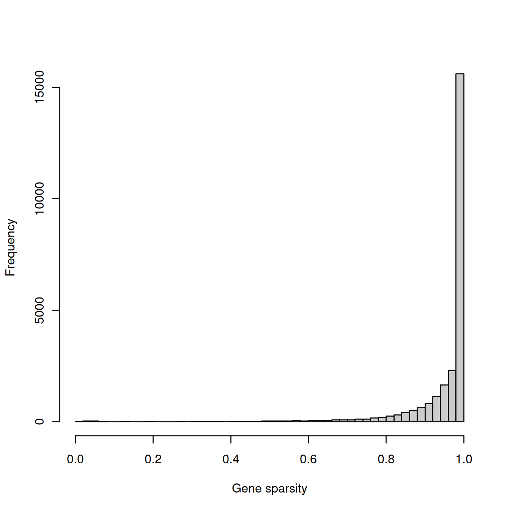
sp <- ggplot(data.frame(colData(sce)),
aes(x=sum, y=subsets_Mito_percent, col=discard)) +
geom_point(size = 0.05, alpha = 0.7) +
geom_density_2d(size = 0.5, colour = "blue") +
guides(colour = guide_legend(override.aes = list(size=1, alpha=1))) +
theme(legend.position="bottom")
#sp
ggExtra::ggMarginal(sp)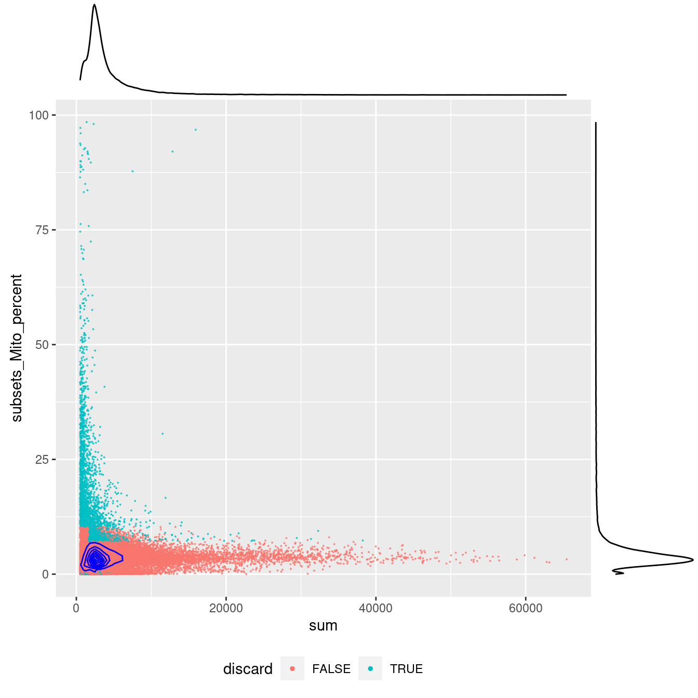
Mind distributions:
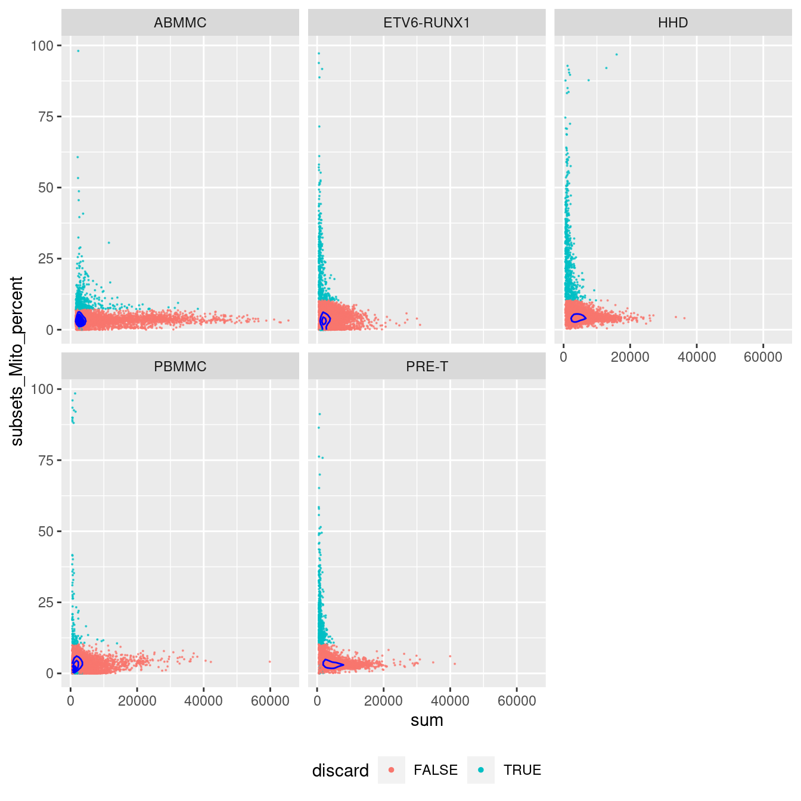
5.12.5 Filter low-quality cells out
We will now exclude poor-quality cells.
## class: SingleCellExperiment
## dim: 33538 35685
## metadata(20): Samples Samples ... Samples Samples
## assays(1): counts
## rownames(33538): ENSG00000243485 ENSG00000237613 ... ENSG00000277475
## ENSG00000268674
## rowData names(10): ensembl_gene_id external_gene_name ... mean detected
## colnames: NULL
## colData names(14): Barcode Run ... discard outlier
## reducedDimNames(1): PCA_coldata
## altExpNames(0):We also write the R object to file to use later if need be.
5.13 Novelty
The number of genes per UMI for each cell informs on the level of sequencing saturation achieved ( hbctraining). For a given cell, as sequencing depth increases each extra UMI is less likely to correspnf to a gene not already detected in that cell. Cells with small library size tend to have higher overall ‘novelty’ i.e. they have not reached saturation for any given gene. Outlier cell may have a library with low complexity. This may suggest the some cell types, e.g. red blood cells. The expected novelty is about 0.8.
Here we see that some PBMMCs have low novelty, ie overall fewer genes were detected for an equivalent number of UMIs in these cells than in others.
p <- colData(sce) %>%
data.frame() %>%
ggplot(aes(x=sum, y=detected, color=subsets_Mito_percent)) +
geom_point() +
stat_smooth(method=lm) +
scale_x_log10() +
scale_y_log10() +
geom_vline(xintercept = 800) +
facet_wrap(~source_name)
p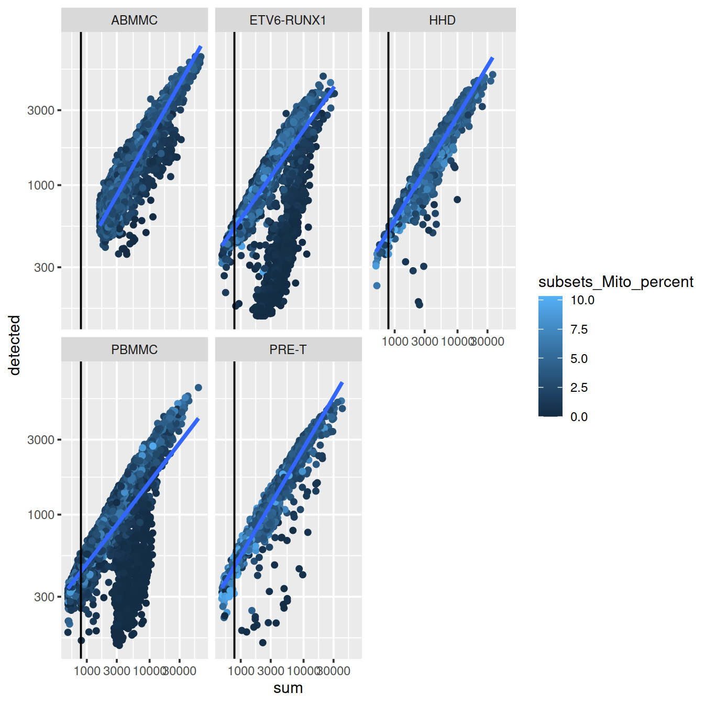
# write plot to file
tmpFn <- sprintf("%s/%s/%s/novelty_scat.png",
projDir, outDirBit, qcPlotDirBit)
ggsave(plot=p, file=tmpFn)
# Novelty
# the number of genes per UMI for each cell,
# https://hbctraining.github.io/In-depth-NGS-Data-Analysis-Course/sessionIV/lessons/SC_quality_control_analysis.html
# Add number of UMIs per gene for each cell to metadata
colData(sce)$log10GenesPerUMI <- log10(colData(sce)$detected) / log10(colData(sce)$sum)# Visualize the overall novelty of the gene expression by visualizing the genes detected per UMI
p <- colData(sce) %>%
data.frame() %>%
ggplot(aes(x=log10GenesPerUMI, color = source_name, fill = source_name)) +
geom_density()
p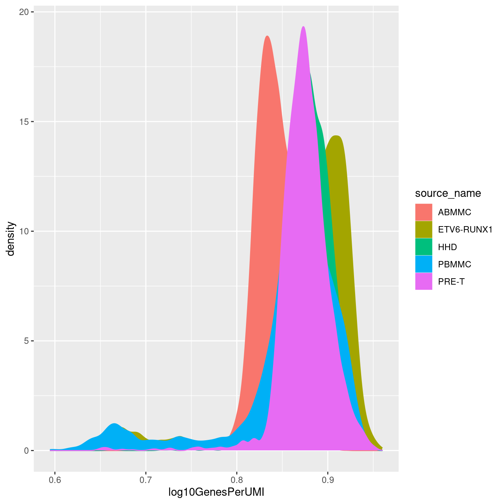
5.14 QC based on sparsity
The approach above identified poor-quality using thresholds on the number of genes detected and mitochondrial content. We will here specifically look at the sparsity of the data, both at the gene and cell levels.
5.14.1 Remove genes that are not expressed at all
Genes that are not expressed at all are not informative, so we remove them:
not.expressed <- rowSums(counts(scePreQc)) == 0
# store the cell-wise information
cols.meta <- colData(scePreQc)
rows.meta <- rowData(scePreQc)
nz.counts <- counts(scePreQc)[!not.expressed, ]
sce.nz <- SingleCellExperiment(list(counts=nz.counts))
# reset the column data on the new object
colData(sce.nz) <- cols.meta
rowData(sce.nz) <- rows.meta[!not.expressed, ]
sce.nz## class: SingleCellExperiment
## dim: 25116 38128
## metadata(0):
## assays(1): counts
## rownames(25116): ENSG00000238009 ENSG00000239945 ... ENSG00000275063
## ENSG00000271254
## rowData names(10): ensembl_gene_id external_gene_name ... mean detected
## colnames: NULL
## colData names(14): Barcode Run ... discard outlier
## reducedDimNames(0):
## altExpNames(0):5.14.2 Sparsity plots
We will compute:
- the cell sparsity: for each cell, the proportion of genes that are not detected
- the gene sparsity: for each gene, the proportion of cells in which it is not detected
# compute - SLOW
cell_sparsity <- apply(counts(sce.nz) == 0, 2, sum)/nrow(counts(sce.nz))
gene_sparsity <- apply(counts(sce.nz) == 0, 1, sum)/ncol(counts(sce.nz))
colData(sce.nz)$cell_sparsity <- cell_sparsity
rowData(sce.nz)$gene_sparsity <- gene_sparsity
# write outcome to file for later use
tmpFn <- sprintf("%s/%s/Robjects/sce_nz_sparsityCellGene.Rds",
projDir, outDirBit)
saveRDS(list("colData" = colData(sce.nz),
"rowData" = rowData(sce.nz)),
tmpFn)# Read object in:
tmpFn <- sprintf("%s/%s/Robjects/sce_nz_sparsityCellGene.Rds",
projDir, outDirBit)
tmpList <- readRDS(tmpFn)
cell_sparsity <- tmpList$colData$cell_sparsity
gene_sparsity <- tmpList$rowData$gene_sparsityWe now plot the distribution of these two metrics.
The cell sparsity plot shows that cells have between 85% and 99% 0’s, which is typical.
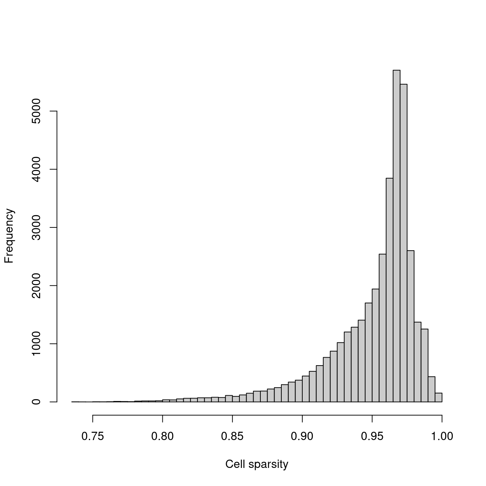
The gene sparsity plot shows that a large number of genes are almost never detected, which is also regularly observed.
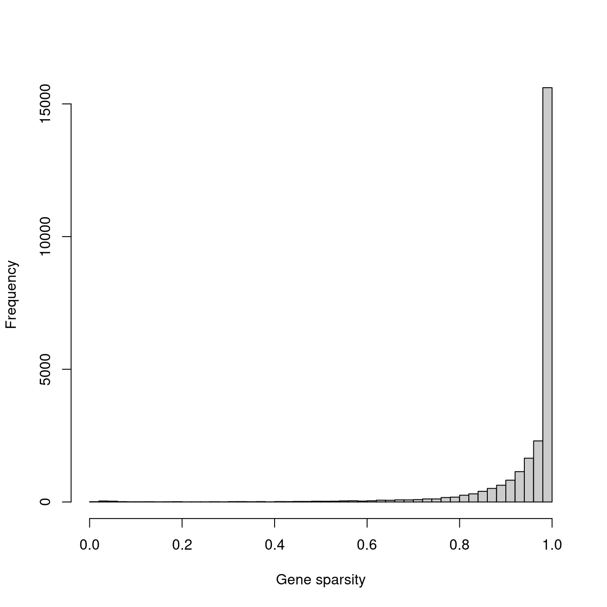
5.14.3 Filters
We also remove cells with sparsity higher than 0.99, and/or mitochondrial content higher than 20%.
Genes detected in a few cells only are unlikely to be informative and would hinder normalisation. We will remove genes that are expressed in fewer than 20 cells.
# filter
sparse.cells <- cell_sparsity > 0.99
mito.cells <- sce.nz$subsets_Mito_percent > 20
min.cells <- 1 - (20/length(cell_sparsity))
sparse.genes <- gene_sparsity > min.cellsNumber of genes removed:
## sparse.genes
## FALSE TRUE
## 17854 7262Number of cells removed:
## mito.cells
## sparse.cells FALSE TRUE
## FALSE 36871 671
## TRUE 525 61# remove cells from the SCE object that are poor quality
# remove the sparse genes, then re-set the counts and row data accordingly
cols.meta <- colData(sce.nz)
rows.meta <- rowData(sce.nz)
counts.nz <- counts(sce.nz)[!sparse.genes, !(sparse.cells | mito.cells)]
sce.nz <- SingleCellExperiment(assays=list(counts=counts.nz))
colData(sce.nz) <- cols.meta[!(sparse.cells | mito.cells),]
rowData(sce.nz) <- rows.meta[!sparse.genes, ]
sce.nz## class: SingleCellExperiment
## dim: 17854 36871
## metadata(0):
## assays(1): counts
## rownames(17854): ENSG00000238009 ENSG00000237491 ... ENSG00000275063
## ENSG00000271254
## rowData names(11): ensembl_gene_id external_gene_name ... detected
## gene_sparsity
## colnames: NULL
## colData names(15): Barcode Run ... outlier cell_sparsity
## reducedDimNames(0):
## altExpNames(0):# Write object to file
tmpFn <- sprintf("%s/%s/Robjects/sce_nz_postQc.Rds",
projDir, outDirBit)
saveRDS(sce.nz, tmpFn)# Read object in:
tmpFn <- sprintf("%s/%s/Robjects/sce_nz_postQc.Rds",
projDir, outDirBit)
sce.nz <- readRDS(tmpFn)Compare with filter above (mind that the comparison is not fair because we used a less stringent, hard filtering on mitochondrial content):
##
## FALSE TRUE
## FALSE 35351 334
## TRUE 1520 9235.14.4 Separate Caron and Hca batches
We will now check sparsity for each batch separately.
5.14.5 Caron only
# compute - SLOW
cell_sparsity <- apply(counts(sce.x) == 0, 2, sum)/nrow(counts(sce.x))
gene_sparsity <- apply(counts(sce.x) == 0, 1, sum)/ncol(counts(sce.x))
colData(sce.x)$cell_sparsity <- cell_sparsity
rowData(sce.x)$gene_sparsity <- gene_sparsity
# write outcome to file for later use
tmpFn <- sprintf("%s/%s/Robjects/%s_sce_nz_sparsityCellGene.Rds",
projDir, outDirBit, setName)
saveRDS(list("colData" = colData(sce.x),
"rowData" = rowData(sce.x)),
tmpFn)# Read object in:
tmpFn <- sprintf("%s/%s/Robjects/%s_sce_nz_sparsityCellGene.Rds",
projDir, outDirBit, setName)
tmpList <- readRDS(tmpFn)
cell_sparsity <- tmpList$colData$cell_sparsity
gene_sparsity <- tmpList$rowData$gene_sparsity# plot
tmpFn <- sprintf("%s/%s/%s/%s_sparsity.png",
projDir, outDirBit, qcPlotDirBit, setName)
png(tmpFn)
par(mfrow=c(1, 2))
hist(cell_sparsity, breaks=50, col="grey80", xlab="Cell sparsity", main="")
hist(gene_sparsity, breaks=50, col="grey80", xlab="Gene sparsity", main="")
abline(v=40, lty=2, col='purple')
dev.off()## png
## 2tmpFn <- sprintf("../%s/%s_sparsity.png",
qcPlotDirBit, setName)
knitr::include_graphics(tmpFn, auto_pdf = TRUE)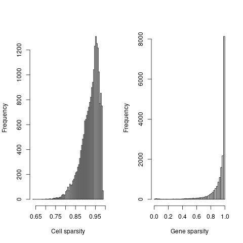
# filter
sparse.cells <- cell_sparsity > 0.99
mito.cells <- sce.x$subsets_Mito_percent > 20
min.cells <- 1 - (20/length(cell_sparsity))
sparse.genes <- gene_sparsity > min.cellsWe write the R object to ‘caron_sce_nz_postQc.Rds’.
# remove cells from the SCE object that are poor quality
# remove the sparse genes, then re-set the counts and row data accordingly
cols.meta <- colData(sce.x)
rows.meta <- rowData(sce.x)
counts.x <- counts(sce.x)[!sparse.genes, !(sparse.cells | mito.cells)]
sce.x <- SingleCellExperiment(assays=list(counts=counts.x))
colData(sce.x) <- cols.meta[!(sparse.cells | mito.cells),]
rowData(sce.x) <- rows.meta[!sparse.genes, ]
sce.x## class: SingleCellExperiment
## dim: 16629 20908
## metadata(0):
## assays(1): counts
## rownames(16629): ENSG00000237491 ENSG00000225880 ... ENSG00000275063
## ENSG00000271254
## rowData names(11): ensembl_gene_id external_gene_name ... detected
## gene_sparsity
## colnames: NULL
## colData names(15): Barcode Run ... outlier cell_sparsity
## reducedDimNames(0):
## altExpNames(0):5.14.6 Hca only
# compute - SLOW
cell_sparsity <- apply(counts(sce.x) == 0, 2, sum)/nrow(counts(sce.x))
gene_sparsity <- apply(counts(sce.x) == 0, 1, sum)/ncol(counts(sce.x))
colData(sce.x)$cell_sparsity <- cell_sparsity
rowData(sce.x)$gene_sparsity <- gene_sparsity
# write outcome to file for later use
tmpFn <- sprintf("%s/%s/Robjects/%s_sce_nz_sparsityCellGene.Rds",
projDir, outDirBit, setName)
saveRDS(list("colData" = colData(sce.x),
"rowData" = rowData(sce.x)),
tmpFn)# Read object in:
tmpFn <- sprintf("%s/%s/Robjects/%s_sce_nz_sparsityCellGene.Rds",
projDir, outDirBit, setName)
tmpList <- readRDS(tmpFn)
cell_sparsity <- tmpList$colData$cell_sparsity
gene_sparsity <- tmpList$rowData$gene_sparsity# plot
tmpFn <- sprintf("%s/%s/%s/%s_sparsity.png",
projDir, outDirBit, qcPlotDirBit, setName)
png(tmpFn)
par(mfrow=c(1, 2))
hist(cell_sparsity, breaks=50, col="grey80", xlab="Cell sparsity", main="")
hist(gene_sparsity, breaks=50, col="grey80", xlab="Gene sparsity", main="")
abline(v=40, lty=2, col='purple')
dev.off()## png
## 2tmpFn <- sprintf("../%s/%s_sparsity.png",
qcPlotDirBit, setName)
knitr::include_graphics(tmpFn, auto_pdf = TRUE)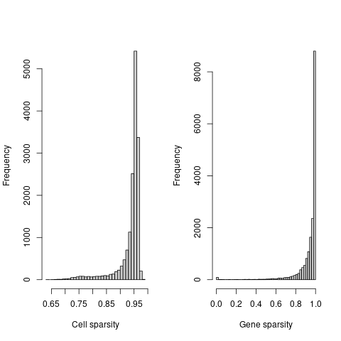
# filter
sparse.cells <- cell_sparsity > 0.99
mito.cells <- sce.x$subsets_Mito_percent > 20
min.cells <- 1 - (20/length(cell_sparsity))
sparse.genes <- gene_sparsity > min.cellsWe write the R object to ‘hca_sce_nz_postQc.Rds’.
# remove cells from the SCE object that are poor quality
# remove the sparse genes, then re-set the counts and row data accordingly
cols.meta <- colData(sce.x)
rows.meta <- rowData(sce.x)
counts.x <- counts(sce.x)[!sparse.genes, !(sparse.cells | mito.cells)]
sce.x <- SingleCellExperiment(assays=list(counts=counts.x))
colData(sce.x) <- cols.meta[!(sparse.cells | mito.cells),]
rowData(sce.x) <- rows.meta[!sparse.genes, ]
sce.x## class: SingleCellExperiment
## dim: 14994 15963
## metadata(0):
## assays(1): counts
## rownames(14994): ENSG00000237491 ENSG00000225880 ... ENSG00000276345
## ENSG00000271254
## rowData names(11): ensembl_gene_id external_gene_name ... detected
## gene_sparsity
## colnames: NULL
## colData names(15): Barcode Run ... outlier cell_sparsity
## reducedDimNames(0):
## altExpNames(0):5.15 Session information
## R version 4.0.3 (2020-10-10)
## Platform: x86_64-pc-linux-gnu (64-bit)
## Running under: CentOS Linux 8 (Core)
##
## Matrix products: default
## BLAS: /opt/R/R-4.0.3/lib64/R/lib/libRblas.so
## LAPACK: /opt/R/R-4.0.3/lib64/R/lib/libRlapack.so
##
## locale:
## [1] LC_CTYPE=en_GB.UTF-8 LC_NUMERIC=C
## [3] LC_TIME=en_GB.UTF-8 LC_COLLATE=en_GB.UTF-8
## [5] LC_MONETARY=en_GB.UTF-8 LC_MESSAGES=en_GB.UTF-8
## [7] LC_PAPER=en_GB.UTF-8 LC_NAME=C
## [9] LC_ADDRESS=C LC_TELEPHONE=C
## [11] LC_MEASUREMENT=en_GB.UTF-8 LC_IDENTIFICATION=C
##
## attached base packages:
## [1] stats4 parallel stats graphics grDevices utils datasets
## [8] methods base
##
## other attached packages:
## [1] robustbase_0.93-7 mixtools_1.2.0
## [3] irlba_2.3.3 biomaRt_2.46.3
## [5] Matrix_1.2-18 igraph_1.2.6
## [7] DropletUtils_1.10.3 scater_1.18.6
## [9] ggplot2_3.3.3 scran_1.18.7
## [11] SingleCellExperiment_1.12.0 SummarizedExperiment_1.20.0
## [13] Biobase_2.50.0 GenomicRanges_1.42.0
## [15] GenomeInfoDb_1.26.7 IRanges_2.24.1
## [17] S4Vectors_0.28.1 BiocGenerics_0.36.1
## [19] MatrixGenerics_1.2.1 matrixStats_0.58.0
## [21] dplyr_1.0.5 DT_0.18
## [23] knitr_1.32
##
## loaded via a namespace (and not attached):
## [1] BiocFileCache_1.14.0 splines_4.0.3
## [3] BiocParallel_1.24.1 crosstalk_1.1.1
## [5] digest_0.6.27 htmltools_0.5.1.1
## [7] viridis_0.5.1 fansi_0.4.2
## [9] magrittr_2.0.1 memoise_2.0.0
## [11] limma_3.46.0 readr_1.4.0
## [13] R.utils_2.10.1 askpass_1.1
## [15] prettyunits_1.1.1 colorspace_2.0-0
## [17] blob_1.2.1 rappdirs_0.3.1
## [19] xfun_0.22 crayon_1.4.1
## [21] RCurl_1.98-1.3 jsonlite_1.7.2
## [23] survival_3.2-7 glue_1.4.2
## [25] gtable_0.3.0 zlibbioc_1.36.0
## [27] XVector_0.30.0 DelayedArray_0.16.3
## [29] BiocSingular_1.6.0 kernlab_0.9-29
## [31] Rhdf5lib_1.12.1 DEoptimR_1.0-8
## [33] HDF5Array_1.18.1 scales_1.1.1
## [35] DBI_1.1.1 edgeR_3.32.1
## [37] miniUI_0.1.1.1 Rcpp_1.0.6
## [39] isoband_0.2.4 xtable_1.8-4
## [41] viridisLite_0.3.0 progress_1.2.2
## [43] dqrng_0.2.1 bit_4.0.4
## [45] rsvd_1.0.3 htmlwidgets_1.5.3
## [47] httr_1.4.2 ellipsis_0.3.1
## [49] pkgconfig_2.0.3 XML_3.99-0.5
## [51] R.methodsS3_1.8.1 farver_2.1.0
## [53] scuttle_1.0.4 sass_0.3.1
## [55] dbplyr_2.0.0 locfit_1.5-9.4
## [57] utf8_1.2.1 later_1.1.0.1
## [59] tidyselect_1.1.0 labeling_0.4.2
## [61] rlang_0.4.10 AnnotationDbi_1.52.0
## [63] munsell_0.5.0 tools_4.0.3
## [65] cachem_1.0.4 generics_0.1.0
## [67] RSQLite_2.2.6 evaluate_0.14
## [69] stringr_1.4.0 fastmap_1.1.0
## [71] yaml_2.2.1 bit64_4.0.5
## [73] purrr_0.3.4 nlme_3.1-149
## [75] sparseMatrixStats_1.2.1 mime_0.10
## [77] R.oo_1.24.0 ggExtra_0.9
## [79] xml2_1.3.2 compiler_4.0.3
## [81] rstudioapi_0.13 beeswarm_0.2.3
## [83] curl_4.3 tibble_3.1.1
## [85] statmod_1.4.35 bslib_0.2.4
## [87] stringi_1.5.3 highr_0.8
## [89] lattice_0.20-41 bluster_1.0.0
## [91] vctrs_0.3.7 pillar_1.6.0
## [93] lifecycle_1.0.0 rhdf5filters_1.2.0
## [95] jquerylib_0.1.3 BiocNeighbors_1.8.2
## [97] cowplot_1.1.1 bitops_1.0-6
## [99] httpuv_1.5.5 R6_2.5.0
## [101] promises_1.1.1 bookdown_0.21
## [103] gridExtra_2.3 vipor_0.4.5
## [105] codetools_0.2-16 MASS_7.3-53
## [107] assertthat_0.2.1 rhdf5_2.34.0
## [109] openssl_1.4.3 withr_2.4.2
## [111] GenomeInfoDbData_1.2.4 mgcv_1.8-33
## [113] hms_1.0.0 grid_4.0.3
## [115] beachmat_2.6.4 rmarkdown_2.7
## [117] DelayedMatrixStats_1.12.3 segmented_1.3-3
## [119] shiny_1.5.0 ggbeeswarm_0.6.0